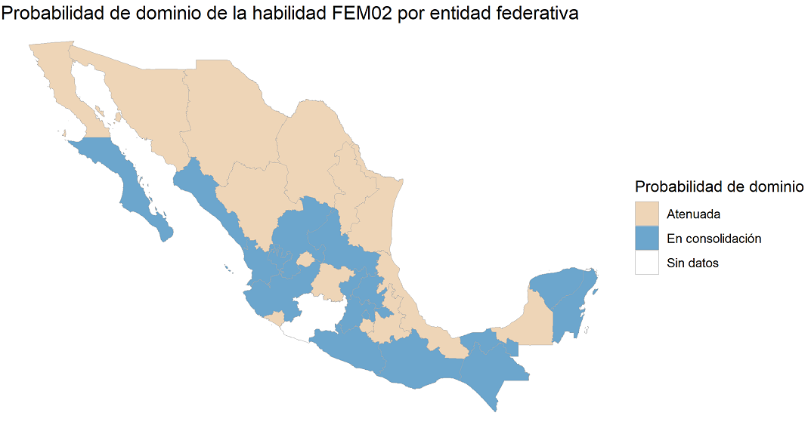
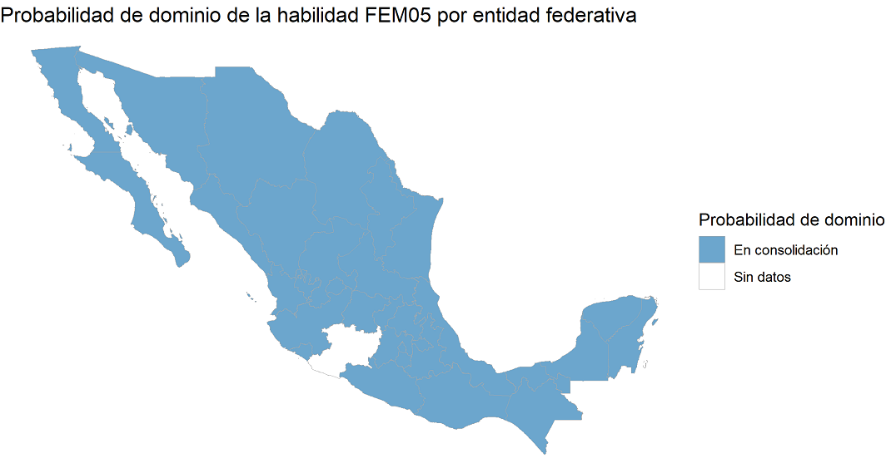
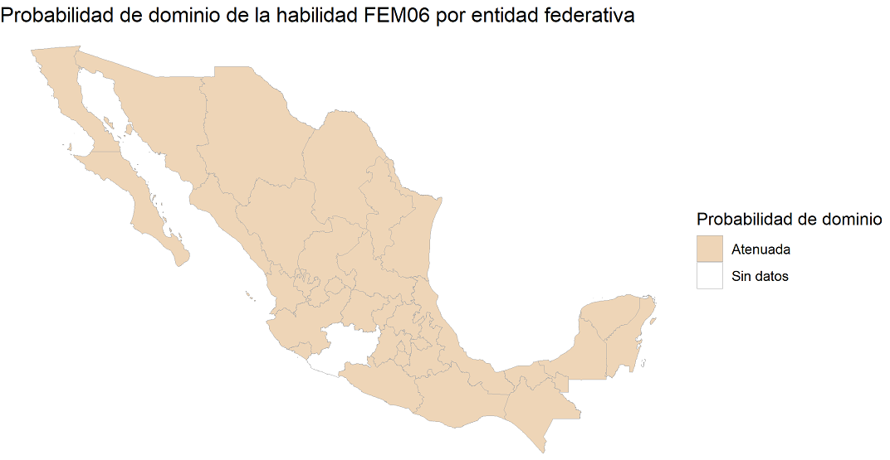
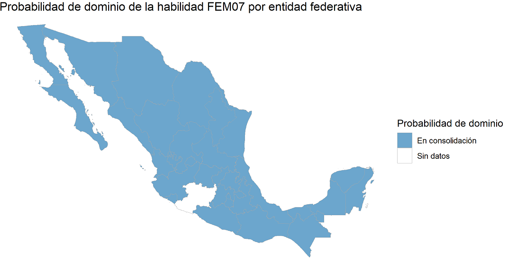
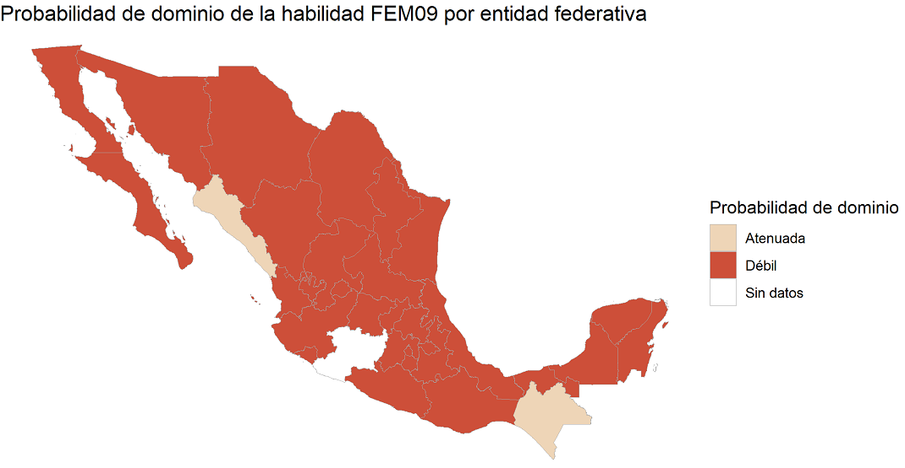
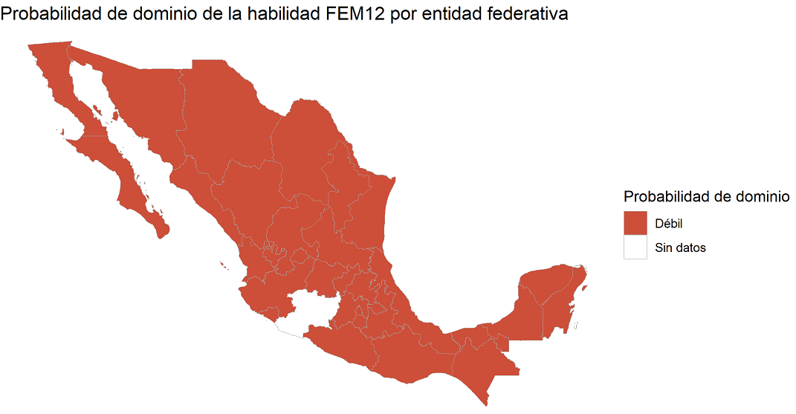

Eje 1: Forma, Espacio y Medida
A continuación se presentan los mapas de calor que por cada una de las 12 habilidades que componen al Eje 1, permite identificar en qué estados se detecta el dominio de estas habilidades y en qué estados es necesario fortalecer el aprendizaje de nuestros estudiantes
FEM01: Comprensión de problemas matemáticos contextualizados
FEM02: Comprensión del Sistema Internacional de Unidades (SIU)

FEM03: Operación de valores posicionales con números naturales y decimales
FEM04: Ubicación de una coordenada en el primer cuadrante del plano cartesiano
FEM05: Aplicación de operaciones aritméticas básicas

FEM06: Definición de tecnicismos del lenguaje formal de la geometría

FEM07: Representación viso-espacial de figuras geométricas

FEM08: Identificación de las características geométricas de los cuadriláteros

FEM09: Identificación gráfica de tipos de líneas rectas (paralelas, perpendiculares y secantes)

FEM10: Representación del modelo aritmético para calcular el perímetro de una figura geométrica (triángulo o cuadrilátero)
FEM11: Representación del modelo aritmético para calcular el área de cuadriláteros o triángulos
FEM12: Deducción de fórmulas para calcular el área mediante descomposición de figuras geométricas
